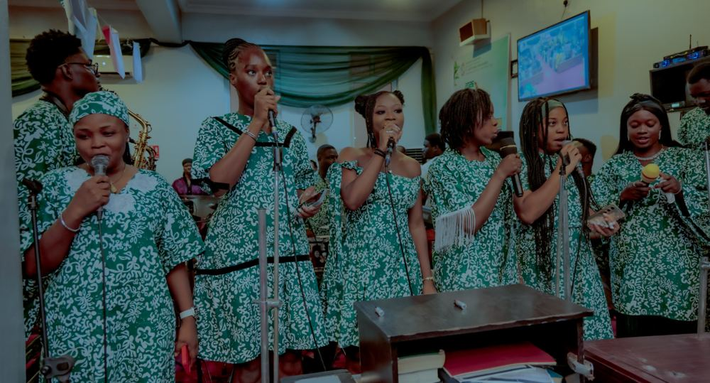
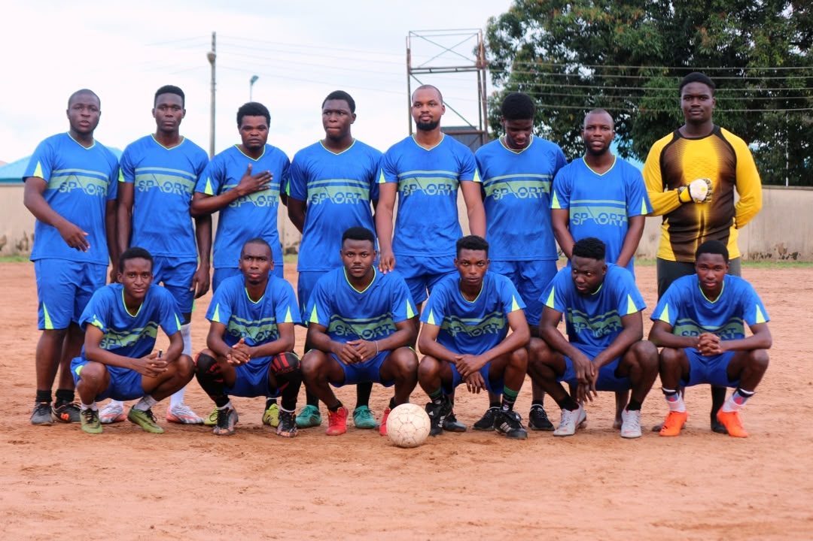
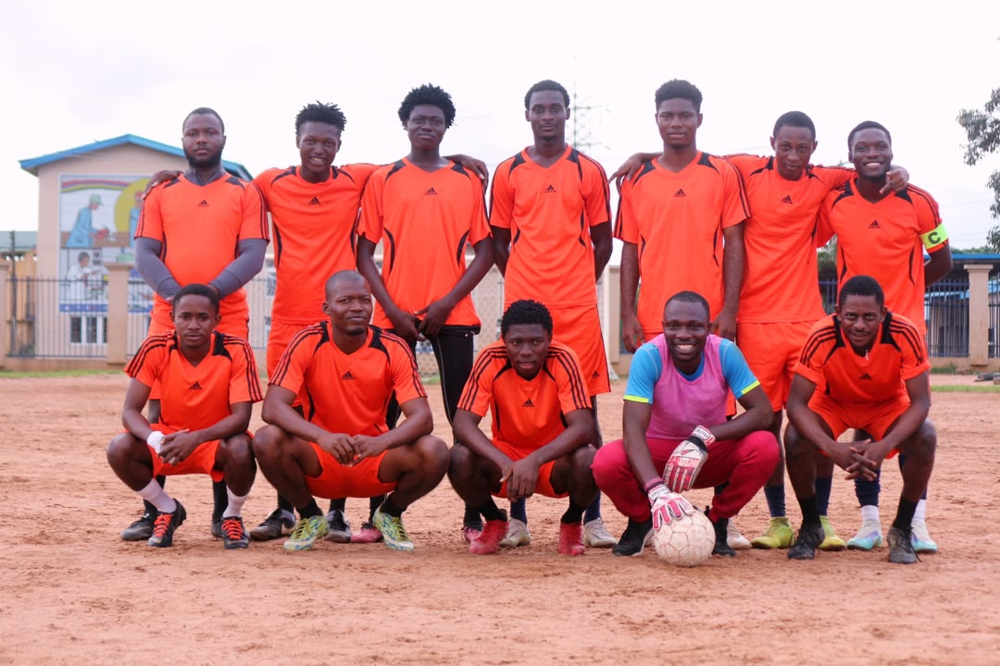
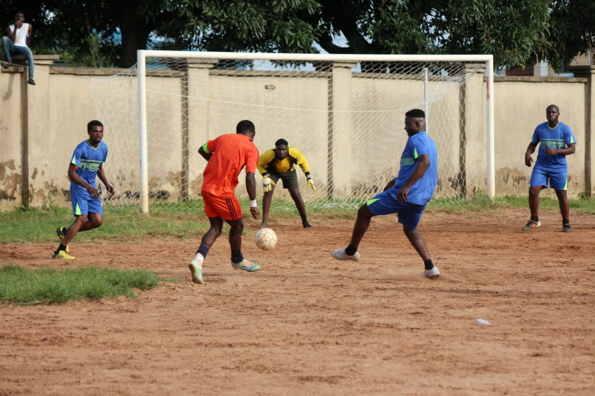

THE SJYF TRIBE
Find Your Fire
There's a place for you here.
Have you ever felt like you wanted to do more than just attend fellowship? Maybe you have a gift you've never really used, a passion you've been waiting to explore, or you simply want to be part of something bigger than yourself.
Well, this is your invitation. You don't have to have everything figured out. You don't have to be the most talented person in the room. You just need a willing heart and a desire to grow. There's a place for you in the SJYF Tribe, and your journey could start with one simple yes.
Discover your place. Find your people. Serve with purpose.
Choir Unit
That song in your heart? There's a place for it here.
You know that moment when a song comes on and you just have to sing along? Or when you’re worshipping and you wish you could do more than sing from your seat? Maybe you already sing beautifully, or perhaps you’re still finding your voice. Either way, you don’t have to be a superstar to make a sound that glorifies God.
In the Choir, your voice becomes part of something bigger. You’ll grow, learn, worship with others, and help create moments that draw hearts closer to God. It’s not just about hitting the right notes; it’s about having the right heart.
Ready to let your voice be heard?
Join Unit →


Chosen Vessel Drama Ministry
What if your creativity could change someone's perspective?
Are you the one who naturally brings characters to life, makes people laugh, tells captivating stories, or imagines how a scene should play out? Maybe you’ve always wanted to act but have never had the opportunity. Here’s your chance to turn that creative spark into something meaningful.
Chosen Vessel uses drama to tell stories that make people think, stir hearts, and bring God’s Word to life. Whether you want to be on stage or help bring a production together behind the scenes, there’s room to learn, express yourself, and make an impact.
Your next role could be more than just a performance.
Join Unit →

Prayer and Word Unit
You want to know God beyond Sunday. Let's start there.
Maybe you’ve ever wanted to understand the Bible more deeply, build a stronger prayer life, or learn how to stand in prayer for someone going through a difficult season. Or perhaps you already love praying and studying Scripture and want to grow alongside people who share that passion.
The Prayer and Word Unit is a space to grow deeper in your relationship with God, strengthen your understanding of His Word, and learn the power of consistent prayer. You don’t need to know every Bible verse or have the perfect words to pray. You can come willing to learn, grow, and seek God.
If your heart is hungry for more of God, there's room for you here.
Join Unit →


Evangelism Unit
Someone out there needs to hear the hope you know.
Have you ever wished you could tell someone about Jesus but wondered how to start the conversation? Maybe you have a heart for people, love meeting new faces, or simply believe that everyone deserves to hear a message of hope.
Evangelism is about more than standing in a crowd with a microphone. It’s about reaching people where they are, listening without judgment, showing genuine love, and sharing the good news of Jesus. You don’t have to be the loudest or boldest person to make a difference. You can learn, grow in confidence, and discover how God can use your willingness to reach others.
You have a message worth sharing. Let's take it further.
Join Unit →


Welfare Unit
You're the friend who notices when someone isn't okay, aren't you?
You’re quick to check on people, remember the little things, celebrate their wins, and show up when life gets difficult. Maybe you believe that sometimes the smallest act of kindness can mean the world to someone.
The Welfare Unit is for people who want the fellowship to feel like family, not just a gathering. From checking in on members to offering practical support and celebrating important moments, you’ll help create a community where people feel remembered, valued, and cared for.
You don’t need grand gestures to make a difference. Sometimes, a thoughtful message, a helping hand, or simply being there is enough to remind someone that they matter.
If caring comes naturally to you, let it become part of your ministry.
Join Unit →


Ushering Unit
You know how much a warm welcome can change everything.
Think about walking into a room where you know nobody. A friendly smile, a simple “You’re welcome,” or someone helping you find your seat can make the whole experience feel different. Now imagine being the person who makes that happen.
The Ushering Unit helps make fellowship welcoming, organised, and comfortable for everyone who walks through the doors. If you’re observant, approachable, organised, or simply enjoy helping people feel at ease, you could be a natural fit. And even if you’re still building your confidence, there’s room to learn.
Your service may happen before the sermon begins, but its impact can stay with someone long after the service ends.
Be the reason someone feels at home.
Join Unit →


Media Unit
You see a moment and immediately think, “This needs to be captured.”
Maybe you’re the one taking pictures at every event, editing videos for fun, creating content, exploring sound equipment, or wondering how the lyrics get on the screen during worship. Or perhaps you’re simply curious about the technology that makes everything work.
The Media Unit brings creativity and technology together to tell the story of the SJYF Tribe. From sound and projection to photography, social media, and content creation, you’ll help people experience, remember, and connect with what happens in the fellowship, even beyond the church walls.
You don’t have to be an expert with expensive equipment or years of experience. Bring your interest, your ideas, and your willingness to learn. There’s room to develop your skills while using them to serve God.
Your creativity has a purpose. Let's put it to work.
Join Unit →


The SJYF Tigers
Your love for football could be your way of belonging.
Be honest: when there’s a football match, are you already thinking about the starting eleven, the perfect pass, or that goal-winning moment? Do you love competing, working with a team, or simply enjoy the energy that comes with the beautiful game?
The SJYF Tigers bring together football, friendship, discipline, and team spirit. It’s an opportunity to develop your game, build genuine connections, represent the Tribe, and learn what it means to win and lose together with respect. Whether you’re a seasoned player or still improving your skills, your passion for the game can find a home here.
Come for the football. Stay for the brotherhood, the growth, and the memories.
Ready to roar with the Tigers?
Join Unit →


Your next chapter starts here.
You don't have to wait until you're more talented, more confident, or more experienced. You can start right where you are, with what you have. There's a place to grow, people to grow with, and a purpose waiting to be explored.
Find your fire. Find your people. Make your service count. The SJYF Tribe has room for you.